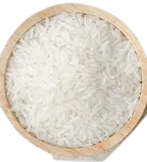

Boiled Rice

Description: A staple food in many cultures, really versatile and forms the base of countless meals.
Ingredients:
- 1 cup of white rice (long-grain or short-grain)
- 2 cups of water
- Pinch of salt
Equipment:
- Medium saucepan with a lid
- Fork or spoon
Instructions:
- Rinse the Rice: Rinse 1 cup of rice under cold water until the water runs clear. This removes excess starch and prevents the rice from becoming sticky.
- Combine Ingredients: In a medium saucepan, combine the rinsed rice, 2 cups of water, and a pinch of salt.
- Boil: Bring the water to a boil over medium-high heat.
- Simmer: Once boiling, reduce the heat to low, cover the saucepan with a lid, and let it simmer for 18-20 minutes, or until all the water is absorbed and the rice is tender.
- Rest: Remove the saucepan from the heat and let it sit, covered, for 5 minutes.
- Fluff: Fluff the rice with a fork and serve.
Go else: Home, Scrambled Eggs, Pasta, Arepa